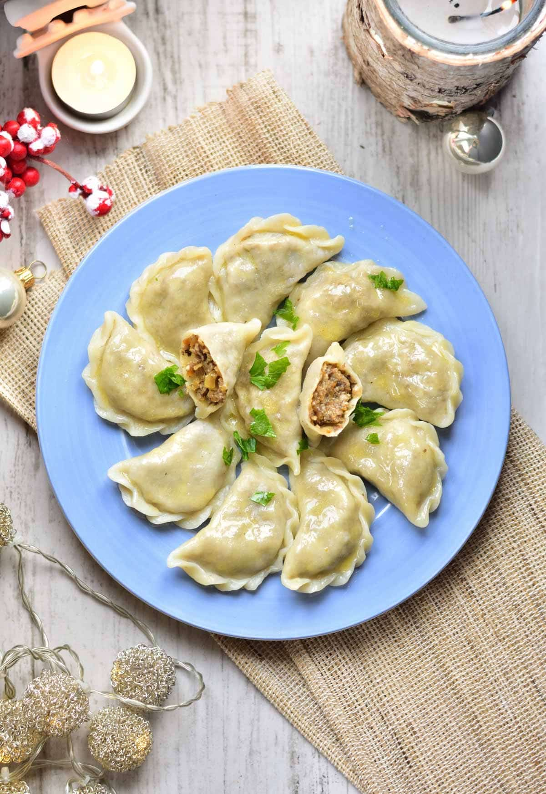

Polskie Pierogi
Go Back

Description
Pierogi are a popular Polish dish that can be eaten in both a casual and
formal occasions. They are essentially a delicious European dumpling. Here we
will teach you how you can make you're own pierogi and start enjoying this delicacy
no matter where in the world.
Pierogi usually consists of meat, mushrooms, cheese, and sauerkraut. Desert pierogi
also exist, such as the strawberry filled version. The following is section contains
the list of ingredients needed for standard meat-filled piergo:
Ingredients
For Dough:
- 2 cups all-purpose flour (plus extra for dusting)
- 1 large egg
- 1/2 cup warm water
- 1 tbsp of a neutral oil of your choosing
- 1/2 tablespoon salt
For Meat:
- 1 lb ground meat (traditionally pork, beef, or a mix — some recipes use chicken or turkey)
- 1 medium onion, finely chopped
- 2 cloves garlic, minced
- 1 tbsp butter or oil (for frying the onion and garlic)
- Salt and black pepper
- (Optional) 1/2 tsp marjoram or thyme for extra flavor
- (Optional) 1–2 tbsp sour cream or broth to keep the filling moist
For Serving:
- Butter, melted
- Sour cream
- Chopped chives or fried onions
Steps
Step 1: Making the dough
- In a large bowl, mix flour and salt.
- Add the egg and oil, then pour in the warm water gradually.
- Mix until a shaggy dough forms.
- Transfer to a floured surface and knead about 5–7 minutes until
smooth and elastic.
- Wrap in plastic or cover with a towel and let rest for 30 minutes.
Step 2: Prepare the Meat Filling
- Heat butter/oil in a pan over medium heat.
- Add onion and cook until golden, about 5 minutes.
- Add garlic and cook another minute.
- Stir in ground meat and cook until browned and fully cooked through.
- Season with salt, pepper, and optional marjoram/thyme.
- Remove from heat, let cool slightly.
- (Optional) Stir in sour cream or broth for extra moisture.
Step 3: Assemble the Pierogi
- Roll the dough on a lightly floured surface until about 1/8 inch (2–3 mm) thick.
- Cut out circles with a glass or round cutter (about 3–3.5 in / 8–9 cm).
- Place 1 heaping teaspoon of filling in the center of each circle.
- Fold the dough over to form a half-moon.
- Pinch the edges tightly (you can also crimp with a fork).
(Tip: If dough is too dry to seal, lightly wet the edge with water.)
Step 4: Cook the Pierogi
- Bring a large pot of salted water to a boil.
- Drop pierogi in batches (don’t overcrowd).
- Stir gently so they don’t stick to the bottom.
- Cook until they float to the surface + 1–2 minutes (about 4–5 minutes total).
- Remove with a slotted spoon and place on a plate.
Step 5: Serve
- Top with melted butter, fried onions, chives, or sour cream.